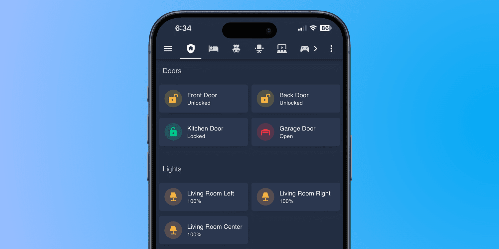
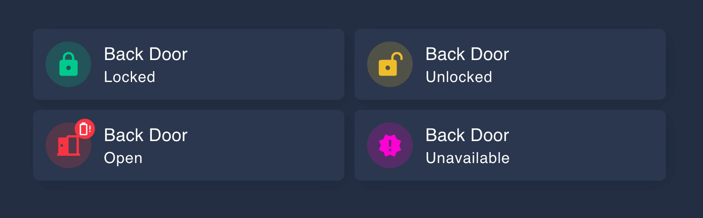
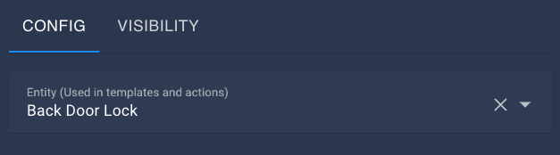

Custom Lock Card
For my mobile devices and home dashboard, the lock card in Home Assistant is invaluable in quickly checking the status of my home.

Prerequisites
- Mushroom (Card)
- Noctis (Theme)
- A lock that integrates with Home Assistant
- A door sensor that integrates with Home Assistant
Overview
In the example below, I am using the Mushroom Template Card to build my own lock card. I wanted a way to track different states that my doors could be in, and report on them accordingly. I also wanted the ability to tap on the icon to lock or unlock the door.
Tracked States
- Closed & Locked
- Closed & Unlocked
- Open
- Unavailable
- Battery Low
Card Breakdown

When you add the Mushroom Template Card to your Home Assistant dashboard, there are quite a few configurations that need to be filled out.
Entity Used
Select the lock you will be using. This will allow you to tap on the icon in order to lock and unlock your door.

Icon
Using if statements, we are going to check the state of both the open/close sensor, as well as the door lock. Based on those conditions we are going to change the icon.
⚠️ The order of the if statement does matter. Because the first matched condition will be returned, we want to start with the least secure, and work our way up to most secure. For example, if we moved if lock.back_door_lock, locked to the top of the card, then someone could open the door but “lock it” which would then show as a secured door.
{% if is_state('binary_sensor.back_door', 'on') %}
mdi:door-open
{% elif is_state('lock.back_door_lock', 'unlocked') %}
mdi:lock-open-variant
{% elif is_state("lock.back_door_lock", "locked") %}
mdi:lock
{% elif is_state("lock.back_door_lock", "unavailable") %}
mdi:alert-octagram
{% endif %}Icon Color
We are using the same if statement as above, however this time instead of changing the icon, we will be changing the icon color.
{% if is_state('binary_sensor.back_door', 'on') %}
#f73543
{% elif is_state('lock.back_door_lock', 'unlocked') %}
#edbd2b
{% elif is_state("lock.back_door_lock", "locked") %}
#00ca8b
{% elif is_state("lock.back_door_lock", "unavailable") %}
#ff00d4
{% endif %}Primary Information
Simply provide the user friendly name for the device. In my case, I am using Back Door.
Secondary Information
The Secondary Information on the card is where you are going to report the state of the door. Again we are going to use an if statement to make determinations about the door, working from least secure to most.
{% if is_state('binary_sensor.back_door', 'on') %}
Open
{% elif is_state('lock.back_door_lock', 'unlocked') %}
Unlocked
{% elif is_state("lock.back_door_lock", "locked") %}
Locked
{% endif %}Badge Icon
This is an optional step, but one I feel brings value. Using another if statement we are going to check the state of the lock battery level, and put a badge icon in place when the battery is low or at zero.
{% if states('sensor.back_door_lock_battery_level') | float == 0 %}
mdi:battery-alert-variant-outline
{% elif states('sensor.back_door_lock_battery_level') | float <= 20 %}
mdi:battery-20
{% else %}
{% endif %}Badge Color
Again, relying on the battery level, we are going to change the color of the badge icon, letting us know the severity of the battery level.
{% if states('sensor.back_door_lock_battery_level') | float == 0 %}
#f73543
{% elif states('sensor.back_door_lock_battery_level') | float <= 20 %}
#edbd2b
{% else %}
{% endif %}Additional Options
From here, you can adjust any of the additional toggles to your liking. If you want to get more complex, you can add additional functionality by setting the Hold Behavior or the Double Tap behavior.
Complete Code Snippet
If you want to simply copy and paste the entire code snippet, you can do so by adding a new card and choosing Manual. From there, simply copy and paste the below code and hit save. You will of course need to modify the code to match your sensors, but this should be a great jumping off point.
type: custom:mushroom-template-card
primary: Back Door
icon: |-
{% if is_state('binary_sensor.back_door', 'on') %}
mdi:door-open
{% elif is_state('lock.back_door_lock', 'unlocked') %}
mdi:lock-open-variant
{% elif is_state("lock.back_door_lock", "locked") %}
mdi:lock
{% elif is_state("lock.back_door_lock", "unavailable") %}
mdi:alert-octagram
{% endif %}
fill_container: false
icon_color: |-
{% if is_state('binary_sensor.back_door', 'on') %}
#f73543
{% elif is_state('lock.back_door_lock', 'unlocked') %}
#edbd2b
{% elif is_state("lock.back_door_lock", "locked") %}
#00ca8b
{% elif is_state("lock.back_door_lock", "unavailable") %}
#ff00d4
{% endif %}
entity: lock.back_door_lock
secondary: |-
{% if is_state('binary_sensor.back_door', 'on') %}
Open
{% elif is_state('lock.back_door_lock', 'unlocked') %}
Unlocked
{% elif is_state("lock.back_door_lock", "locked") %}
Locked
{% endif %}
hold_action:
action: more-info
badge_icon: |-
{% if states('sensor.back_door_lock_battery_level') | float == 0 %}
mdi:battery-alert-variant-outline
{% elif states('sensor.back_door_lock_battery_level') | float <= 20 %}
mdi:battery-20
{% else %}
{% endif %}
badge_color: |-
{% if states('sensor.back_door_lock_battery_level') | float == 0 %}
#f73543
{% elif states('sensor.back_door_lock_battery_level') | float <= 20 %}
#edbd2b
{% else %}
{% endif %}